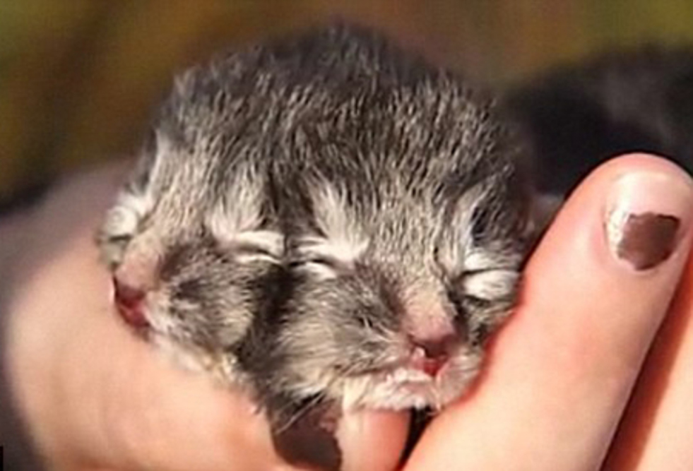
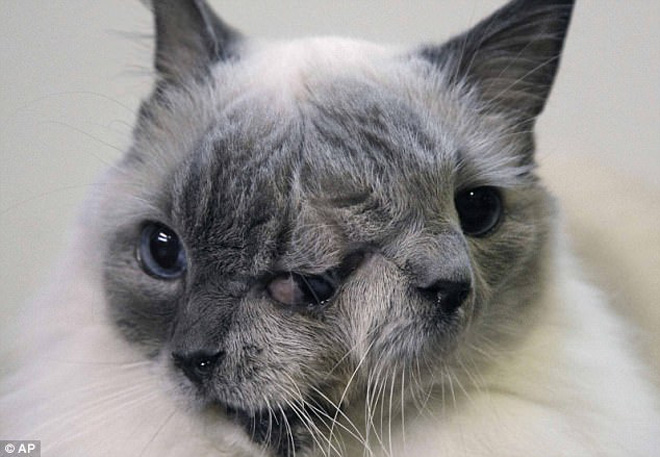

The Unique Charisma of the Two-Faced Cat and Its Journey
Embark on a mesmerizing journey into the extraordinary world of two-faced cats. These feline wonders, known for their unique facial markings, captivate the hearts of cat enthusiasts around the globe.
The Enchanting Appearance
Two-faced cats, also referred to as chimera cats, showcase a captivating blend of colors and patterns on their faces. Their distinct markings often create a visual illusion, making them appear as if they have two faces in one.
Each two-faced cat is a living masterpiece, with a face that tells a story of genetic marvel and uniqueness.
A Genetic Marvel
The two-faced appearance in these cats is a result of genetic chimerism, where two genetically distinct embryos fuse together, creating a single individual with dual genetic makeup. This rare phenomenon contributes to the mesmerizing charm of these feline companions.
The Journey of Discovery
Join us as we delve into the journey of these two-faced cats, exploring the challenges and joys they face in a world that celebrates their distinctiveness. From viral sensations on social media to beloved members of families, these cats have left an indelible mark on the hearts of those who encounter them.